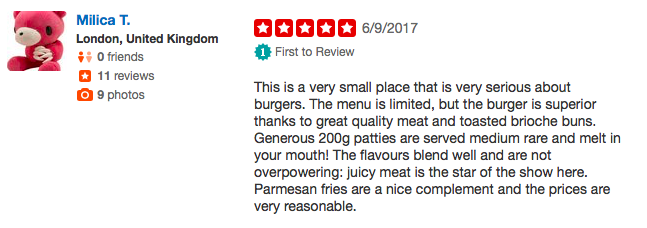

Predicting the sentiment of users based on their text input
A member of the Labra AI pool built a neural network for sentiment analysis, which could be rapidly trained for many use cases. The idea was that this neural network could be used to analyze for instance the happiness of customers calling a call call center or analyzing the risk of fraud in insurance claims.
The model was tested using Yelp reviews, where it would have to predict the star rating given by users based on the text input of their experience. Thousands of Yelp reviews each with the star rating as a label were used to train the model.
A 5-star review of Social Burgerjoint in Helsinki. Apparently they have good burgers.
The model works excellently in this use case as it achieves a 76% accuracy. The average absolute error is 0.29, which means that the correct answer is on average under one star away from the prediction.